Week 3: Introduction To NFAs
Chris Tralie
Nondeterministic Finite Automata (NFAs)
At this point in the course, we talked about a generalization of DFAs called Nondeterministic Finite Automata (NFAs). The idea here is that we can have more than one arrow with the same symbol coming out of a state, none at all, or a special symbol called λ. The machine is "nondeterministic" because it clones itself into a sort of "parallel universe" situation to explore multiple paths in parallel, and it can keep branching. If one or more branches ends up persisting to an accept state, then we consider the NFA to have accepted a language. Let's look at an example
Example 1
We'll create an NFA that accepts a binary string that, when read from left to right, has a 1 in the 2s place. Below is a picture of an NFA that accomplishes this (Click here to download the JFLAP file)
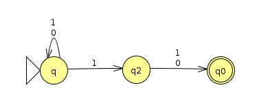Let's consider the input 11010. We know by looking at it that it does indeed have a 1 in the 2s place. But what does the NFA do? We can keep track of the branching using a tree that follows the different possibilities as new characters are read:
Notice how when we are at a state that has multiple arrows coming out of it for a particular input, we branch off into each possibility. Also, as soon as we reach a dead end, a particular path dies off. In this case, the only path that survives until the end is the one that stays at q until the 4th character comes in, when it jumps to q2 and then q0, which is an accept state. Since it ends at an accept state, the string is said to be accepted by the machine.
We can interpret the above machine as taking a gamble on when it's actually reading the 2s place. If it's reading the 2s place and it sees a 1 as it should, it jumps from the start to q2. If it hasn't read the 2s place yet, it stays at q regardless. We can see that the rightmost branches in the above evaluation guessed incorrectly that they were in the 2s place, and this is what caused them to die off when they had more characters than anticipated.
You can also explore NFA evaluations in JFLAP by stepping through, as shown below for this example
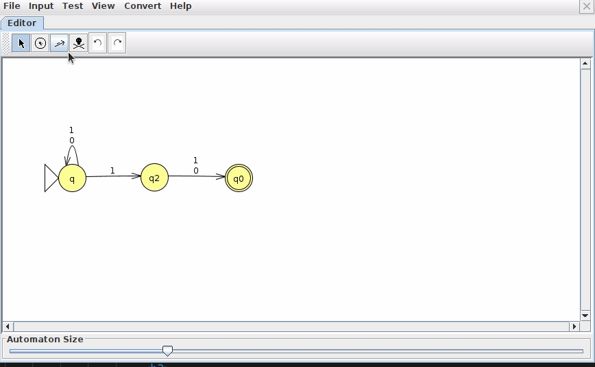Example 2: A Union
Let's go back to the union example from last time and see how we can do the same thing more simply with an NFA. Recall that a machine that recognizes binary strings with at most 1 one looks like this:
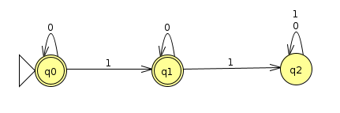and a machine that recognizes an odd number of zeros looks like this
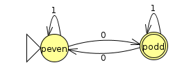We used the cartesian product to create a DFA to recognize both
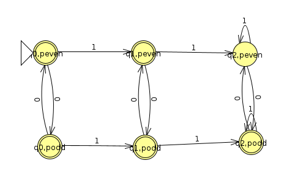But we can express the union in an even more intuitive way if we use the λ symbol, which starts a branch that jumps to the next symbol without any input, as shown below (Click here to view the JFLAP file)
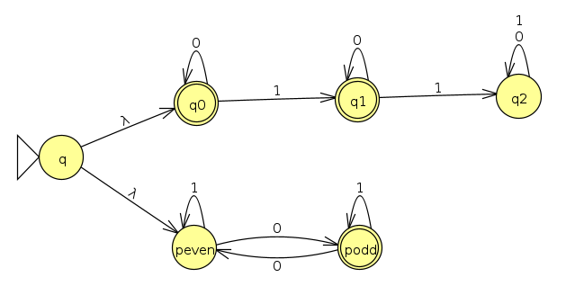Below is a trace for the input 00011. We see it branches right away and explores both machines in parallel. In this case, they both happen to accept, though only one of them has to accept
Below is what such a parallel exploration looks like in JFLAP

Reversing Regular Languages
NFAs give us a nice tool to design machines that recognize the reverse of particular languages if we're given a DFA for the original language. If the original DFA accepts a string s0 s1 s2 ... sm, then this means that there is a sequence of states q, q0, q1, q2, ..., qm that is compatible with the string, where qm is an accept state. Were we to visit the string in reverse, we would visit the states in reverse, starting at qm and ending at q. What this means is that we should take the following steps to devise an NFA that accepts the reverse string:
- Reverse all of the arrows
- Make the start state the accept state (since this is where we want to end for the reverse string)
-
If there's only one end state in the original DFA, make this the start state in the reverse DFA.
Otherwise, if there are multiple end states, we have to think a little harder, because, like a DFA, an NFA only has one start state. We're also not sure which end state a particular string in the original language would have accepted on. So we create a dummy start node in the reverse that branches to all of the original end states with a λ
Let's look at a couple of examples to see how this works
Example 1
Let's recall the DFA that accepts strings that contain a 01:
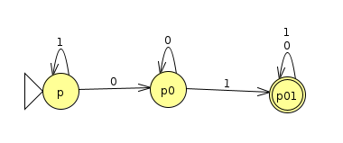Here's what we get if we follow the above recipe (Click here to view the JFLAP file)
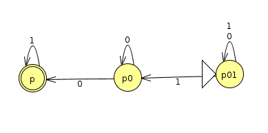We can see right away it's an NFA and not a DFA, because p01 has two arrows coming out for a 1 input, and p0 has two arrows coming out for a 0 input. The new accept state, p, will also kill off any branches that have a 0 on them.
Example 2
Let's consider a DFA that recognizes the languages of strings over Σ={a, b} that do not contain the substring ba. The DFA below accomplishes this (Click here to view the JFLAP file)
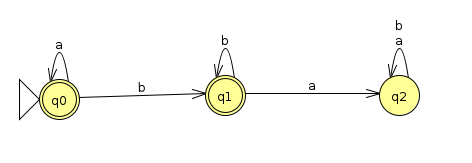If we follow the recipe to reverse the arrows, we get the following (Click here for the JFLAP file)
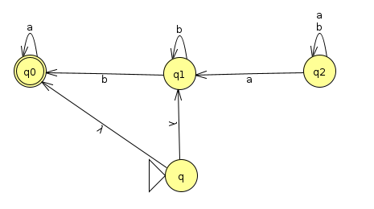This is an example where the original DFA had multiple accept states, so we needed to be able to start the reverse at any of them. We accomplish this by including a dummy start state that immediately branches to all of them with a λ.
Actually, we can simplify this a bit by noticing that it's impossible to reach the state q2 from any of the start states:
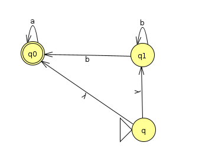NFA to DFA
It might seem at this point like NFAs are way more powerful than DFAs. Every DFA is trivially an NFA with no branching, but it seems like we can represent more complicated things with an NFA. Amazingly, though, NFAs are no more powerful than DFAs, in the sense that it is possible to construct a DFA for any NFA. In other words, like DFAs, NFAs also recognize the class of regular languages. We'll demonstrate a procedure to prove by construction how to convert NFAs to DFAs.
Example 1
Let's return to the last example to start with
We're going to do something like we did when constructing DFAs to recognize the union of two regular languages; that is, we'll create "meta states" that are a tuple of all states we could possibly be in after observing some amount of symbols. For instance, in example 1 at the beginning of this document, we were in q by itself, but we were also in (q, q2), (q, q2, q0), (q, q0), q2, and q0. We'll have to consider all such possibilities.
Returning to our current simpler example, we have the following transition table
| a | b | |
| (q0, q1) | q0 | (q0, q1) |
| q0 | q0 | {} |
| {} | {} | {} |
- We start off in states q0 and q1, which we represent with the meta state (q0, q1), and we consider what happens to each of these. When we see an a, q0 stays at q0, but q1 actually has a dead end, so this collapses to just q0. When we see a b, q0 has a dead end, but q1 splits into q0 and q1, so this can be viewed as a self transition (q0, q1) -> (q0, q1)
- When we're at q0, a causes is to stay there, but there's a dead end at b, so we actually transition to a null, which I indicated with {}
- Nulls (or as some in class call, "Azkaban") are like places that we get stuck at and can never recover from, so they transition to themselves for all characters
- Accept states are bolded in the left column. An accept state in an DFA we construct from an NFA is any meta state that contains at least one accept state from the NFA.
When we draw this out graphically, we see the following (Click here to view the JFLAP file)
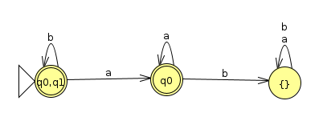And actually, if we stare at this, we can see that it accepts anything that doesn't contain an "ab". This is neat, because we just discovered that this is precisely the language that's the reverse of the language we started with of strings that don't contain a "ba."